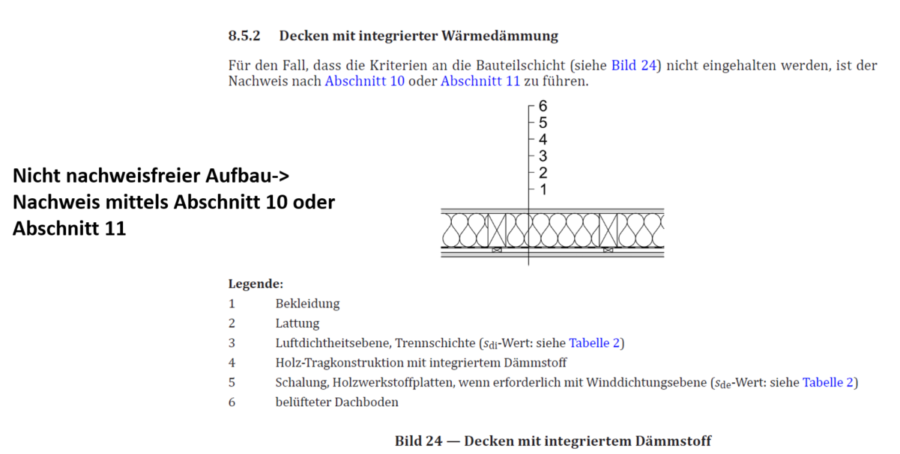
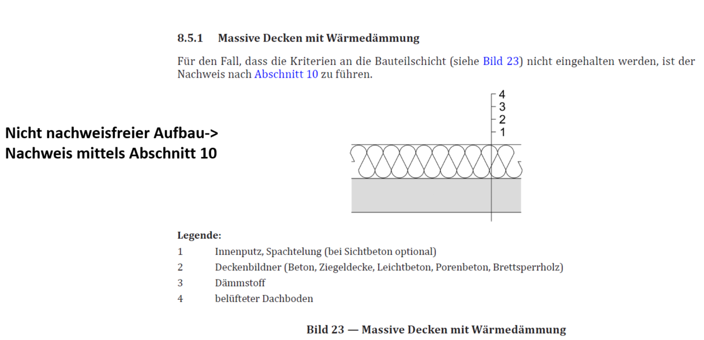
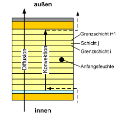
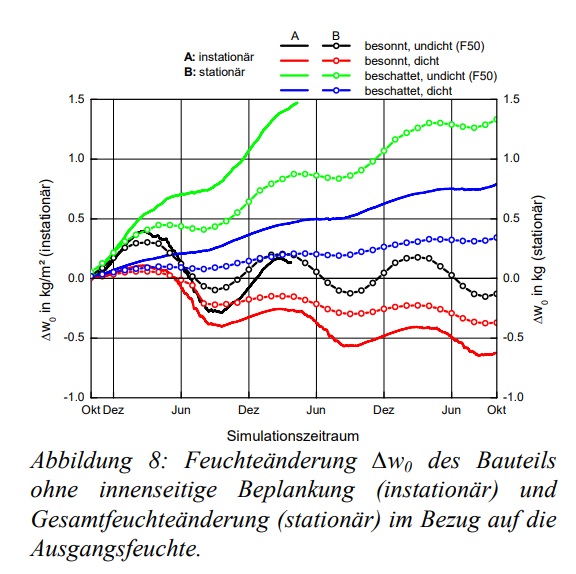
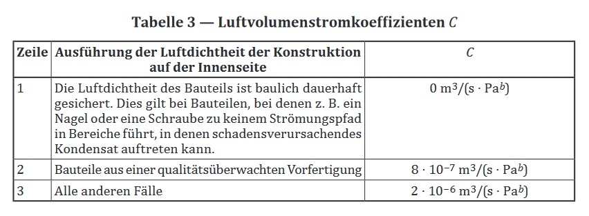

Methoden der Nachweisführung und Risikonanalyse bei Berücksichtigung des konvektiven Wärme- und Feuchtetransports
Contents
Methoden der Nachweisführung und Risikonanalyse bei Berücksichtigung des konvektiven Wärme- und Feuchtetransports¶
Die Nachweisführung bei Berücksichtigung des konvektiven Wärme- und Feuchtetransports ist in Österreich nach ÖNORM 8110-2:2020 zu führen. Wenn man aus dem Katalog der nachweisfreien Konstruktionen herausgefallen ist, gilt es entweder den Nachweis nach
zu führen.


Fig. 21 Ausschnitt aus dem Katalog der nachweisfreien Konstruktionen aus ÖNORM 8110-2:2020. Beispiel für einen Aufbau bei dem, bei nicht-erfüllung der Anforderungen, ein Nachweis nach Abschnitt 10 oder 11 gestattet ist.¶


Fig. 22 Ausschnitt aus dem Katalog der nachweisfreien Konstruktionen aus ÖNORM 8110-2:2020. Beispiel für einen Aufbau bei dem, bei nicht-erfüllung der Anforderungen, ein Nachweis nur nach Abschnitt 10 gestattet ist.¶
Die Methode zur Nachweisführung nach
Abschnitt 10 ist die hygrothermische Simulation, wobei die Nachweisführung nach
Abschnitt 11 mit Hilfe des “Euro-Glaser-Verfahrens” erfolgt.
Folgende Unterkapitel sollen Erklärungen und Hilfestellungen zur Interpretation, Verwendung und essenziellen Ergänzungen der Norm in Bezug auf die Nachweisführung bieten.
Tip
Die Nachweisverfahren stützen sich immer auf EN ISO Standards, werden jedoch national um essenzielle Inhalte ergänzt und widersprechen sich dadurch manchmal.
Abschnitt 10: Nachweis der Vermeidung schadensverursachender Kondensation bei der Anwendung des Bemessungsklimas -> hygrothermische Simulation¶
Der Nachweis mittels hygrothermischer Simulation stützt sich auf EN ISO 15026 und wird mittels Annahmen und Ergänzungen innerhalb der ÖNORM 8110-2:2020 erweitert. Die Ergänzungen auf nationaler Ebene haben gegenüber der europäischen Norm vorrang und müssen eingehalten werden.
Die wichtigsten Ergänzungen sind:
Ein- und Ausströmung von Luft in Hohlräume von Konstruktionen ist bei der Berechnung des Feuchtehaushaltes zu berücksichtigen.
Berechnung ist für die kritischen Bereiche einer Konstruktion und in geeigneter Dimensionalität durchzuführen.
Kriterien zur Beurteilung:
Einstellung eines eingeschwungenen Zustandes
Veränderung d. Feuchteanreicherung \(leq\) 1% im Vergleich zum Vorjahr
Ermittlung von Risikos:
Risiko Schimmelpilzwachstums
Risiko Eisbildung
Risiko Verrottung (organ. Materialien)
Beeinflussung d. Wärmestroms durch Feuchtezustände
Erhöhung d. mittleren Wärmestroms <= 10%
Abschnitt 11: Vereinfachter Nachweis der Vermeidung schadensverursachender Kondensation im Inneren von Bauteilen -> Modifizierter Euro-Glaser¶
Der Nachweis mittels “Modifiziertem Euro-Glaser-Verfahrens” stützt sich auf EN ISO 13788 und wird mittels Annahmen und Ergänzungen innerhalb der ÖNORM 8110-2:2020 erweitert. Das “Euro-Glaser-Verfahren” ist ein erweitertes Glaserverfahren welches konvektive Transportphänome berücksichtigt.
Dieses vereinfachte Verfahren berücksichtig laut EN ISO 13788 nicht:
Schwankungen der Materialeigenschaften in Abhängigkeit vom Feuchtegehalt
kapillare Saugwirkung und Transport von Feuchte in der flüssigen Phase in Baustoffen
Luftbewegung aus dem Gebäudeinneren in das Bauteil durch Spalten oder in Lufträumensiehe Eränzunghygroskopisches Verhalten von Baustoffen
Die wichtigsten Ergänzungen sind:
Bei Konstruktionen mit Lufthohlräumen (z. B. Holzrahmenbauwände, Holzbalkendecken) ist anstatt der Diffusionsgleichung die Diffusions-/Konvektionsgleichung für Wärme- bzw. Feuchtetransport zu verwenden
Die Diffusions-/Konvektionsgleichungen sind eine auf die Flussdichte bezogene Darstellung unserer im vorherigen Kapitel hergeleiteten Lösung für die konvektiven Transportgleichungen.
und
Wobei \(e^{P_{H}}\) und \(e^{P_{M}}\) die modifizierte Peclet-Zahl für den Fall des Wärme- bzw. Feuchtetransports darstellen:
Kriterien zur Beurteilung:
Ohne Anfangsfeuchte
Kondensat im Bauteil muss unter \(g_{c} < 0.5\) kg/m² liegen
Vollständige Austrocknung der in der kühlen Jahreszeit aufgetretenen Feuchte im 1. Sommer
Mit Anfangsfeuchte
Kondensat im Bauteil muss unter \(g_{c} < 0.5\) kg/m² liegen
Vollständige Austrocknung der in der kühlen Jahreszeit aufgetretenen Feuchte im 2. Sommer
Modifizierter Euro-Glaser¶
Das Modifizierte Euro-Glaser-Verfahren wurde als solches erstmals in [Nusser et al., 2010] präsentiert:
Im Zuge der Untersuchungen wurden 50 Einfamilienhäuser hinsichtlich der Anzahl ihrer Elektro- und Heizung/Klima/Sanitärinstallationen hin ausgewertet. Mit Hilfe der Verallgemeinerung des Luftvolumenstroms durch diese Leckagen auf den Luftvolumenstrom durch ein nicht abgeklebtes Elektrokabel wird eine Volumenstromgleichung hergeleitet und vier Luftdichtheitsklassen definiert.
Um den erhöhten Wärme- und Feuchtetransport zu Folge von Leckagen zu berücksichtigen wird für durchströmbare Schichten die Diffusion-/Konvekitonsgleichung angewendet. Fig. 23


Fig. 23 Definition der Schichten in denen Diffusion und Diffusion + Konvektion angesetzt wird.¶
Dabei wird auch gezeigt, dass die Berechnungen für den betrachteten Fall auf der sicheren Seite liegen und das Verfahren für konservative Abschätzungen eine gute erste Näherung darstellt. Fig. 24


Fig. 24 Euro-Glaser liegt auf der sicheren Seite¶
Berücksichtigung von Anfangsfeuchten bei Verwendung des Euro-Glasers laut 8110-2:2020¶
Die Berechnung des Bauteiles mit Anfangsfeuchte, ermöglicht es die Toleranz der Konstruktion gegenüber eingedrungenem Wasser zu bewerten.
Dabei wird ein Feuchtezuschlag von 0.25 kg/m² angesetzt, wenn Konstruktionsteile aus biogenen Werkstoffen zwischen Schichten liegen deren \(s_{d}\)-Wert \(\geq\) 0.5 m ist. Dieser Feuchtezuschlag wird in der Mitte zwischen den sperrenden Schichten verortet und für den Monat, wo zuvor das maximale Kondensat aufgetreten ist, angesetzt.
Vorgehensweise:
Berechnung der Konstruktion ohne Anfangsfeuchte
Ermittlung des Monats mit maximalem Kondensat
Ansetzen des Feuchtezuschlages in dem ermittelten Monat
Ermittlung des Kondesats mit Anfangsfeuchte
Berücksichtigung von Leckagen laut 8110-2:2020¶
Um die normative Vorgabe bzgl. des Einflusses von Luftströmungen zu berücksichtigen, kann beispielsweise ein Luftpfade innerhalb einer Konstruktion definiert werden. Die dafür relevanten Parameter können dem Abschnit 9.2 Strömungswiderstand von Bauteilen entnommen werden.
Entscheidend dabei ist Tabelle 3, welche den Luftvolumenstromkoeffizienten und dessen Wahlkriterien vorgibt:


Fig. 25 Tabelle 3 zur Definition des Luftvolumenstromkoeffzienten C.¶
Tip
Um auf der sicheren Seite zu liegen, kann Zeile 3 als ungünstigster Fall gewählt werden.